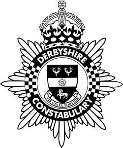

Trade Mark Journal No.2025/015 11 April 2025
UK00004071136 3 July 2024 (6,9,14,16,18,21,25,26,28,35,36,39,41,42,45)
Mark 1

Mark 2
The rights conferred by this registration are personal to the Chief Constable of the Derbyshire Constabulary and may not be enforced or acquired by any licensee or assignee/transferee of the said the Chief Constable of the Derbyshire Constabulary. This limitation shall not restrict the Chief Constable of the Derbyshire Constabulary from permitting third parties to use the mark under contract.
- Class 6
- Locking devices and mechanisms; security devices made of metal; security doors; safes; cash boxes; padlocks; armour plating; crash barriers; chains for dogs; door openers; handcuffs; keys; key rings; number plates; shutters; parts and fittings for the aforesaid.
- Class 9
- Decorative magnets for the fridge; fridge magnets; cinematographic film, pre-recorded cinematographic films, silent cinematographic films; films on video tape; video; compact discs containing recorded video, company newspapers downloaded via the internet; cases adapted for mobile phones; computer games programs; hand held and office based electronic apparatus and instruments for security, driving licence and monitoring purposes; scientific and optical apparatus, devices and instruments; computers and software; electronic publications; computer databases; computer disks; CD-ROMS; secure transmissions apparatus; computer game programmes and computer graphics software; video tapes, cassettes, discs and films; audio tapes, cassettes and compact discs; sound, video and data recordings; recorded television and radio programmes; photographic films; instructional teaching apparatus and instruments; records, discs, tapes, cassettes, cartridges, cards and other carriers bearing or for use in bearing sound recordings, video recordings, data, images, games, graphics, texts, programmes or information; memory carriers; interactive compact discs; interactive CDs; DVDs; magnets; calculators; video game cartridges; computer based trainers and simulators; computerised data processing systems; electronic control systems; compasses; protective clothing and equipment including body armour, footwear, hand wear, headgear including helmets; sunglasses, sun visors and sunshades; mouse mats; mobile phone accessories; Computer software programmes for educational purposes.
- Class 14
- Clocks and watches; commemorative coins; medals; tie pins, tie clips; cuff links; souvenir badges (novelty) for wear, made of precious metal; chronometric instruments; commemorative coins and medals; tie bars; watch strap and bracelets; rings; ear rings; necklaces; medallions; sundials; jewellery including jewellery for personal adornment; trophies; key rings; identity tags being jewellery; key fobs; .
- Class 16
- Educational materials in printed form; banners of cardboard, banners of paper, display banners made of card, display banners made of cardboard; display banners made of paper; drink coasters of cardboard and drink coasters of paper; book markers; stamps; printed matter; printed publications; periodical publications; stationery; paper; cardboard; certificates; printed data, graphic images and tickets; envelopes, bags, labels, tags; newsletters, magazines, pamphlets, periodicals; writing instruments, pens, pencils, markers and crayons; erasers, rulers, pencil cases and pencil sharpeners; paper clips, paperweights; book ends, book markers, coasters; maps, location charts, pictures, posters, photographs, prints; diaries and calendars; postcards; greeting cards; photograph albums; note books; address books; wrapping and packaging material, gift tags; table mats and napkins; printing stamps and ink pads; lithographs; stickers; transfers (decalcomanias); ring binders; folders; personal organisers; pen and pencil cases; teaching, educational, training and instructional material; operating and maintenance manuals; training simulators being instructional and teaching material (except apparatus) used to train staff in how to cope with real life crime/incidents, security and driving situations; training guides; drawings, surveys, charts; books, booklets, brochures, catalogues, guides and advertising material; book-binding materials; comic books; souvenir posters, programmes and booklets; albums; watercolours; commemorative stamps; publications; security paper and tapes; towels; flags; carrier bags; paper and plastic bags; Printed publications.
- Class 18
- Bags; wallets; purses; card holders; suit carriers; umbrellas; Card holders made of leather; Leather and imitation leather; Imitation leather bags; Leather credit card holder; Card holders made of imitation leather; coin holders.
- Class 21
- Figurines made of bone china, figurines made of china; mugs made of bone china, mugs made of china; piggy banks of china; decorative chinaware; crystal glassware, decorative glassware, domestic glassware, painted glassware, plates for collectors; ceramics and glassware; porcelain ware; plates made of porcelain, china, glassware, porcelain, pottery; jugs; painted glassware, glass crystals, glass bowls, glass decanters; bottles, insulated bottles and flasks; figurines and ornaments of ceramic, china, crystal, glass, earthenware, terracotta and porcelain; sculptures, models, figurines, plaques; flower pots; cups and plates; tableware; plates; wall plaques (not being furniture); salt shakers; pepper pots, pepper mills; drinking glasses; tankards and tumblers; vases, cups and mugs; coffee mugs; moneyboxes; candle holders; tea plates, tea service and tea pots; goblets of precious metals; tankards of precious metals; trays, vases and urns; salt and pepper pots; figurines in the form of souvenirs; .
- Class 25
- Clothing; uniforms; workwear; articles of outer clothing; shirts, coats, jackets, trousers; sweatshirts; jeans; T-shirts, vests, shorts, skirts, blouses; rainwear, waterproof clothing; suits; sweaters, pullovers, cardigans; ties, belts, scarves; sports clothing; headgear; headbands and wristbands; footwear; shoes; slippers; boots; caps, hats; jumpers; neckties; pants; pullovers; scarves; shoes; skirts; socks; tights; dresses; blouses; slacks; shorts; overalls, visors and shades; Clothing; Parts of clothing, footwear and headgear.
- Class 26
- Embroidered badges; non-metallic badges for wear; novelty badges (for wear); novelty buttons (badges) for wear; ornamental badges (buttons) for wear; ornamental novelty badges (buttons); souvenir badges (novelty) for wear (not of precious metal); belt buckles; rosettes; tassels; pin cushions and needle cushions; brooches; fastenings; hat, hair and shoe ornaments; patches for clothing; belt clasps; bows; edgings for clothing; garlands; festoons; shoe laces; belt buckles; .
- Class 28
- Playing cards; miniature car models; scale models; jigsaws, puzzles; novelties in the form of souvenirs; teddy bears; hand puppets; puppets; commemorative models of vehicles and marine craft; model cars for collectors; toys, games and playthings; soft toys; stuffed toys; electronic toys and games machines; video games; board games; music boxes; computer simulated games and street games; electronic game machines; novelties in the form of souvenirs; skates; masks; kites; playing cards; balloons; puppets; inflatable toys; handcraft sets being toys; chess and card games; stress balls.
- Class 35
- Administration of databases; updating and managing databases; Electronic publication of printed matter for advertising purposes; Dissemination of advertising material [leaflets, brochures and printed matter]; Retail services in relation to printed matter; Data file administration; Management of computer databases; Database management; Updating of business information on a computer data base; Business management assistance; Business enquiries and investigations; Business consultancy services.
- Class 36
- Financial sponsorship; assessment and management of funding for income generation and sponsorship; provision of funds for commercialisation of products and marketing; insurance and financial services; financial analysis, measurements; provision of funding for innovation and targeted research into policing, security, safety and community.
- Class 39
- Rental of vehicles, transporting of passengers, prisoners and patients; escorting of passengers, prisoners and patients, rescue and towing of vehicles, storage of articles, guarded transport of goods.
- Class 41
- Education; distribution (other than transportation) of videos; production of video films; production of video recordings; productions of video tapes; information relating to entertainment or education, provided on-line from a computer database or the internet; training and tuition services; provision of training facilities; sporting, physical training and leisure facilities; arranging and conducting of training courses, conferences, seminars exhibitions, symposiums and workshops; provision of information; organising and presenting shows, fun days, fairs, fetes, concerts, dances, regattas, sporting events and live entertainment; presentation and rental of sound and video recordings and of films and radio and television programmes; entertainment, education and instruction; museum and archival facilities; provision and publication of printed matter relating to safety, security, discipline, policing, community affairs public awareness and citizenship; organisation of cultural and educational exhibitions; organisation of and arranging seminars and conferences; Publication of printed matter and printed publications; Publication of printed matter in electronic form; Publishing of printed matter; Multimedia publishing of printed matter.
- Class 42
- Maintenance of computer databases; provision of information about IT security matters.
- Class 45
- Protection of property and individuals; security services; advisory services relating to security; public events security services; airport security services; computerised security services; domestic security services; security guard services; policing services; theft and fraud prevention services; anti-gun crime services; crime prevention advisory services; crime prevention consultancy services relating to policing, safety, security, discipline, community services; community affairs, public awareness and citizenship; information services relating to policing, crime, fraud; hiring of security equipment; rental of police equipment namely rental of protective headgear, rental of safety apparatus, rental of safety equipment, rental of security apparatus, rental of security surveillance apparatus, rental of surveillance apparatus; rental of surveillance apparatus, uniform rental, clothing rental; registration services for home owners, commercial and community organisations; monitoring of alarms.
Chief Constable of Derbyshire Constabulary
Representative: Sabrina Sangha